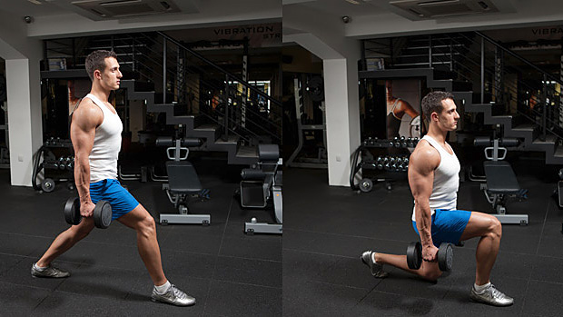
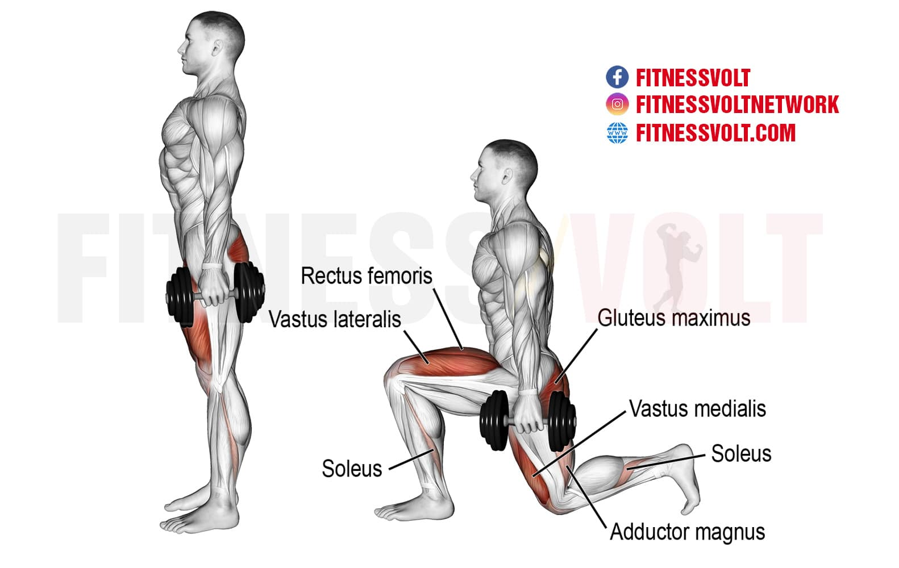

Leg workouts engage the major muscle groups of your body, which helps to improve overall athletic performance and support healthy movement patterns in your daily life. A strong lower body will also help to prevent injury and manage chronic conditions such as arthritis, heart disease, and diabetes.
Best Legs exercices
Barbell Back Squat

Squats are king because they're the most challenging leg movement you can do. They work all the lower-body musculature and have been shown to spike muscle-building hormone release. In fact, squatting before doing curls has even been shown to significantly improve arm strength! Don't laugh: Powerlifter and bodybuilder Layne Norton, Ph.D., pairs the two moves in his Legs and Arms Blast workout.


Lunge
Like all the movements listed thus far, lunges involve hip and knee extension, which gives you the stimulus for both the thighs and glutes. Another advantage: They can be done weighted in traditional muscle-building rep ranges, with dumbbells or a barbell, or with body weight alone for higher reps..
- 
- 
Leg Press

Leg press vs. squat is a classic weight-room debate, but one that misses the point. Strength coach and physical therapist John Rusin explains why in his article, "Don't Do High-Rep Squats, Deads, and Bench! Do These Instead. " Squats are for doing early in a leg workout and going heavy, he explains, and leg presses are for doing afterward for high reps. Sounds like a recipe for leg growth to us!


leg extension

The leg extension, or knee extension, is a type of strength training exercise. It's an excellent move for strengthening your quadriceps, which are in the front of your upper legs. Leg extensions are done on a leg extension machine. ... Then you use your quads to repeatedly extend your knees and lift your lower legs.


Leg Curl

"A Scientific Approach to Hamstring Training," muscle-building expert Brad Schoenfeld, Ph.D., conclusively makes the case that for balanced, strong hamstrings you need curls, too. Specifically, the lower hamstrings are activated dramatically more during seated leg curls than deadlifts—even stiff-legged deadlifts.